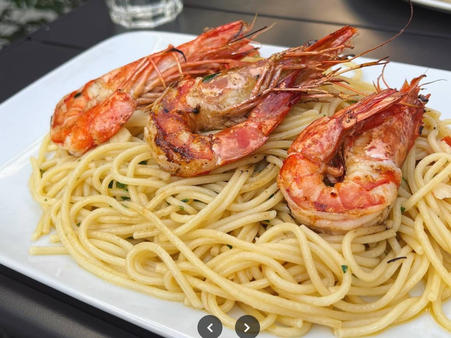
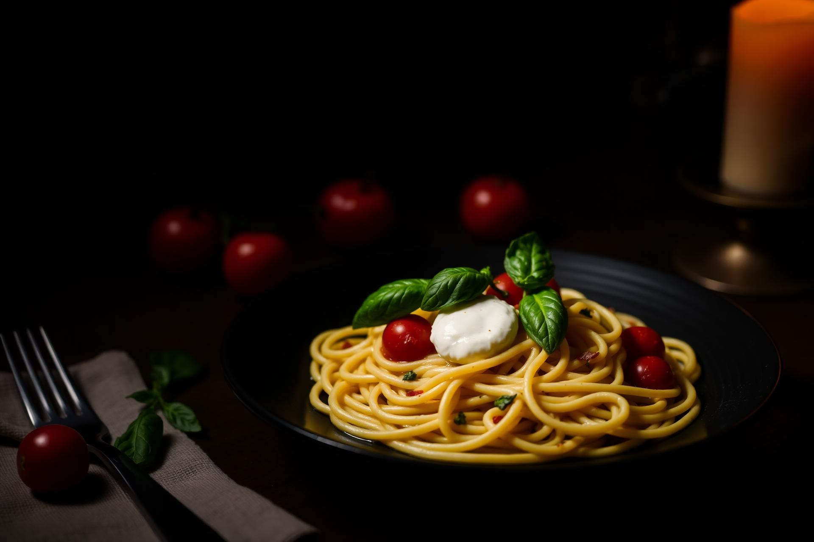
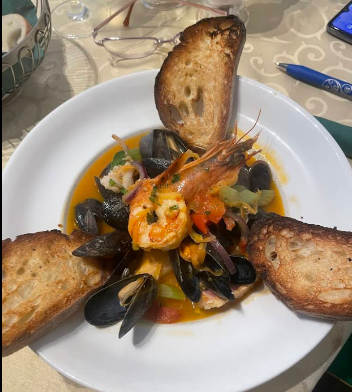
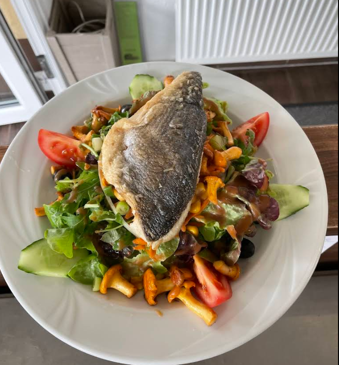
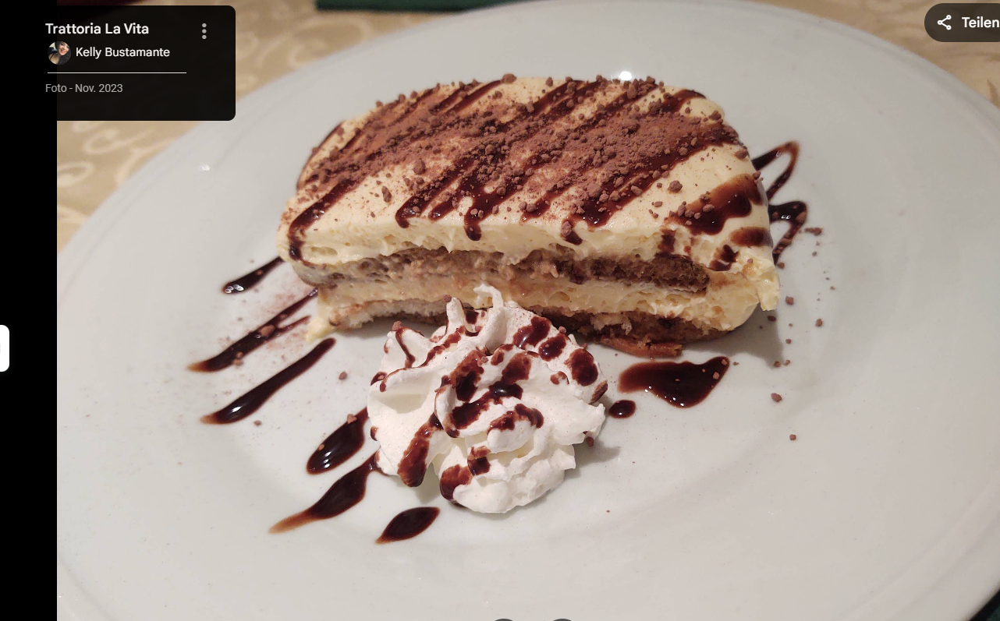
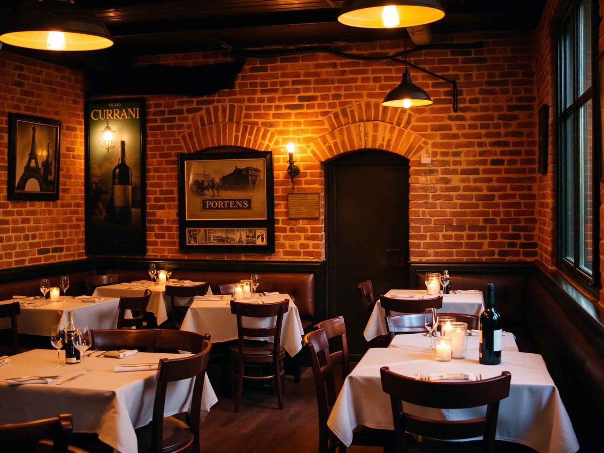

01Spaghetti ai Gamberoni
17,90 €Spaghetti mit gegrillten Riesengarnelen, Knoblauch & Petersilie

Frankfurt · seit 2008
Klein. Fein. Mit Liebe gekocht. Eine familiengeführte Trattoria im Herzen von Bockenheim — wo Pasta noch Handwerk ist und der Lambrusco nie ausgeht.
„Liebevoll zubereitet, großzügige Portionen, unschlagbares Preis-Leistungs-Verhältnis."
I Nostri Piatti
Drei Klassiker, für die unsere Gäste immer wieder zurückkommen.

01Spaghetti mit gegrillten Riesengarnelen, Knoblauch & Petersilie

02Mediterrane Fischsuppe mit Muscheln, Garnelen & Crostini

03Gebratenes Wolfsbarschfilet auf Salat mit Pfifferlingen

04Hausgemacht nach altem Familienrezept

17
Jahre Gastfreundschaft
La Storia
Was als kleiner Traum begann, ist heute ein vertrauter Treffpunkt für Genießer in Frankfurt-Bockenheim. In unserer Küche wird täglich frisch gekocht — mit Zutaten, die direkt aus Italien kommen, und Rezepten, die seit Generationen weitergegeben werden.
Bei uns ist niemand nur Gast. Sie sitzen an einem Tisch, der Familie ist. Ob ein Glas Lambrusco nach Feierabend oder ein langer Abend mit Freunden — la vita beginnt hier.
Frisch
Täglich
Hausgemacht
Pasta
Familiär
Geführt
Le Voci
„
„Total leckeres Essen mit absolut fairen Preisen. Man schmeckt, dass mit Liebe und Können gekocht wird."
„
„Super süßes, kleines italienisches Familienrestaurant. Liebevoll zubereitet, großzügige Portionen."
„
„Der Salat mit Hähnchen und Balsamico-Soße ist der absolute Wahnsinn!"
Vieni a Trovarci
Adresse
Leipziger Straße 50
60487 Frankfurt am Main
Öffnungszeiten
Montag – Samstag
12:00 – 14:30 · 17:30 – 23:00
Sonntag Ruhetag
Service
Speisen vor Ort · Zum Mitnehmen · Lieferung